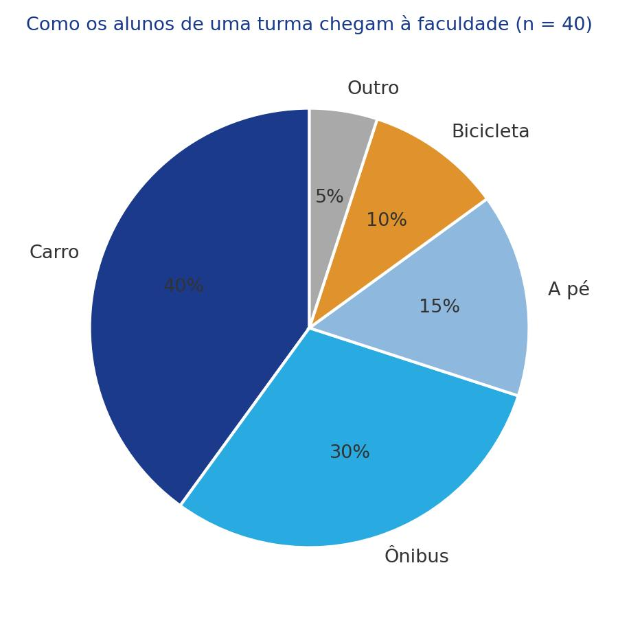
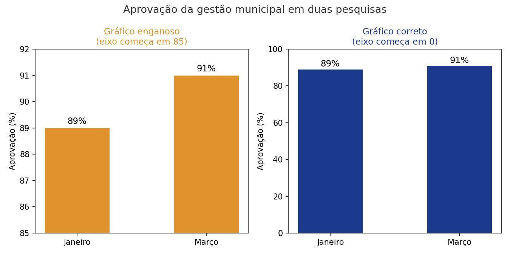
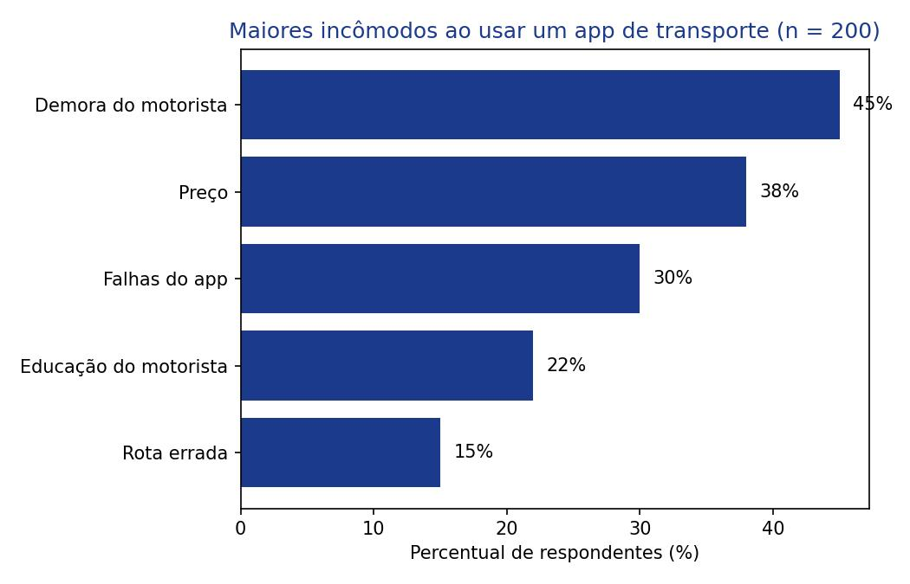

Como ler gráficos de pizza e de barras?
Já vimos como resumir dados com números (média, mediana, desvio padrão). Agora vamos resumir dados com imagens. Gráficos estão em toda parte, de reportagens a aplicativos, mas nem sempre são construídos (ou lidos) da forma correta. Nesta aula você vai aprender a ler e a construir os dois gráficos mais usados para dados categóricos: o gráfico de pizza e o gráfico de barras, e a desconfiar de gráficos que distorcem a realidade.
Objetivos de Aprendizagem
Ao término desta aula, vocês serão capazes de:
- Interpretar um gráfico de pizza e calcular o tamanho de uma fatia;
- Interpretar um gráfico de barras, distinguindo frequência de frequência relativa (percentual);
- Reconhecer situações em que um gráfico de pizza não deveria ser usado;
- Identificar técnicas comuns de gráficos enganosos, como eixos cortados ou esticados;
- Construir gráficos de pizza e de barras simples em Python a partir de dados categóricos.
Seções de Estudo
- SEÇÃO 1 Gráfico de pizza: proporções em fatias
- SEÇÃO 2 Gráfico de barras: comparando categorias
- SEÇÃO 3 Lendo gráficos com espírito crítico
Gráfico de pizza: proporções em fatias
O gráfico de pizza (ou gráfico de setores) mostra como um total se divide em categorias, representando cada uma como uma fatia de um círculo. Como cada indivíduo pertence a uma única categoria, a soma de todas as fatias deve fechar em 100% (a menos de um pequeno arredondamento).

| Meio de transporte | Alunos | Percentual |
|---|---|---|
| Carro | 16 | 40% |
| Ônibus | 12 | 30% |
| A pé | 6 | 15% |
| Bicicleta | 4 | 10% |
| Outro | 2 | 5% |
Gráfico de barras: comparando categorias
O gráfico de barras também representa dados categóricos, mas usa o comprimento das barras em vez de fatias. Cada barra pode mostrar a frequência (a contagem de indivíduos na categoria) ou a frequência relativa (o percentual). Diferente do gráfico de pizza, as barras não precisam somar 100%, o que o torna ideal para pesquisas em que cada pessoa pode escolher mais de uma resposta.
| O que a barra mostra | O que significa |
|---|---|
| Frequência | Número de indivíduos na categoria (contagem bruta) |
| Frequência relativa | Percentual de indivíduos na categoria |
Lendo gráficos com espírito crítico
Gráficos podem ser construídos de forma a exagerar ou disfarçar diferenças reais nos dados. A técnica mais comum é mudar onde o eixo começa: cortar a base do eixo faz pequenas diferenças parecerem enormes, enquanto "esticar" a escala faz diferenças reais parecerem insignificantes.

| Sinal de alerta | Por que desconfiar |
|---|---|
| Eixo não começa em zero | Exagera diferenças pequenas |
| Gráfico de pizza em 3D | Distorce o tamanho real das fatias |
| Fatia "outros" muito grande | Esconde informação que poderia ser detalhada |
| Sem informar o total (n) | Impede avaliar se a amostra é confiável |
Exemplo Matemático Resolvido
Uma pesquisa com 250 usuários perguntou qual rede social eles mais usam. 100 responderam Instagram. Qual é o tamanho da fatia do Instagram em um gráfico de pizza, em percentual e em graus?
- Dados: quantidade = 100; total = 250
- Fórmula: Fatia (%) = quantidadetotal × 100
- Substituição: Fatia (%) = 100250 × 100
- Cálculo: 100250 = 0,4; 0,4 × 100 = 40%; em graus, 40% × 3,6° = 144°
- Interpretação: a fatia do Instagram ocupa 40% do gráfico de pizza, o que corresponde a 144° dos 360° do círculo completo.
Exemplo em Python
A seguir, dois programas com matplotlib: um gráfico de
pizza com os dados de transporte da Seção 1, e um gráfico de barras
horizontais com os dados de incômodos da Seção 2.
import matplotlib.pyplot as plt
transporte = {
"Carro": 16,
"Ônibus": 12,
"A pé": 6,
"Bicicleta": 4,
"Outro": 2,
}
total = sum(transporte.values())
plt.pie(
transporte.values(),
labels=transporte.keys(),
autopct="%.0f%%",
)
plt.title(f"Como os alunos chegam à faculdade (n = {total})")
plt.savefig("transporte.png")
Entrada: dicionário com o meio de transporte e a quantidade de alunos em cada um.
Processamento: plt.pie desenha uma
fatia para cada meio de transporte, com autopct
escrevendo o percentual dentro da própria fatia.
Saída: a mesma imagem da Figura 1, com "Carro" ocupando a maior fatia (40%).
Interpretação: como cada aluno tem um único meio de transporte, as fatias somam 100%, exatamente como discutido na Seção 1.
import matplotlib.pyplot as plt
incomodos = ["Demora do motorista", "Preço",
"Falhas do app", "Educação do motorista",
"Rota errada"]
percentuais = [45, 38, 30, 22, 15]
plt.barh(incomodos, percentuais, color="#1B3A8C")
plt.xlabel("Percentual de respondentes (%)")
plt.title("Maiores incômodos ao usar um app de transporte (n = 200)")
plt.tight_layout()
plt.savefig("incomodos.png")
Entrada: lista de incômodos e lista de percentuais correspondentes.
Processamento: plt.barh desenha
uma barra horizontal para cada incômodo, com comprimento
proporcional ao seu percentual.
Saída: a imagem da Figura 3, com "Demora do motorista" (45%) na barra mais longa.
Interpretação: como a pesquisa permitia mais de uma resposta, os percentuais não somam 100%, exatamente como discutido na Seção 2.

Exercícios
Gabarito Comentado
Exercício 1
import matplotlib.pyplot as plt
generos = {
"Ação": 32,
"Comédia": 24,
"Drama": 16,
"Terror": 8,
}
total = sum(generos.values())
for genero, quantidade in generos.items():
percentual = (quantidade / total) * 100
print(f"{genero}: {percentual:.1f}%")
plt.pie(
generos.values(),
labels=generos.keys(),
autopct="%.0f%%",
)
plt.title(f"Gênero de filme favorito (n = {total})")
plt.savefig("generos.png")
Saída: "Ação: 40.0%", "Comédia: 30.0%", "Drama: 20.0%" e "Terror: 10.0%", além do gráfico de pizza com as quatro fatias.
Comentário: aplicação direta da fórmula da Seção 1. Como cada pessoa deu uma única resposta, os percentuais somam exatamente 100%, por isso o gráfico de pizza é apropriado aqui (diferente do Exercício 2, com respostas por nota).
Exercício 2
import matplotlib.pyplot as plt
notas = {
"5 estrelas": 90,
"4 estrelas": 30,
"3 estrelas": 20,
"2 estrelas": 7,
"1 estrela": 3,
}
total = sum(notas.values())
for nota, quantidade in notas.items():
percentual = (quantidade / total) * 100
print(f"{nota}: {percentual:.1f}%")
plt.bar(notas.keys(), notas.values(), color="#29ABE2")
plt.ylabel("Número de avaliações")
plt.title(f"Avaliações do aplicativo (n = {total})")
plt.tight_layout()
plt.savefig("avaliacoes.png")
Saída: "5 estrelas: 60.0%", "4 estrelas: 20.0%", "3 estrelas: 13.3%", "2 estrelas: 4.7%" e "1 estrela: 2.0%", além do gráfico de barras com "n = 150" no título.
Comentário: incluir o "n" no título evita o problema visto na Seção 1 e na Seção 3: um gráfico sem o tamanho da amostra não permite avaliar sua confiabilidade.
Retomando a Conversa Inicial
Seção 1, Gráfico de pizza: as fatias mostram proporções que somam 100%, mas nunca revelam o total; sempre procure o "n" da amostra.
Seção 2, Gráfico de barras: as barras podem mostrar frequência ou frequência relativa e não precisam somar 100%, o que permite representar respostas múltiplas.
Seção 3, Lendo gráficos com espírito crítico: eixos cortados, gráficos 3D e fatias "outros" exageradas são as formas mais comuns de um gráfico distorcer a realidade.
Revisão Rápida
| Conceito | Fórmula | Erro comum | Dica de prova | Aplicação em Tecnologia |
|---|---|---|---|---|
| Gráfico de pizza | categoriatotal × 100 | Não checar o total (n) | Fatias somam 100% | Uso do tempo de tela por tipo de app |
| Gráfico de barras | contagemtotal × 100 | Confundir frequência com percentual | Não precisa somar 100% | Reclamações sobre um app |
| Eixo enganoso | N/A | Não notar onde o eixo começa | Desconfie de eixos cortados | Comparar notas entre apps concorrentes |
| Fatia "outros" | N/A | Fatia "outros" maior que as demais | Verifique se poderia ser detalhada | Categoria "outros apps" escondendo dados |
Sugestões de Leituras e Sites
LEITURAS
RUMSEY, Deborah J. Statistics For Dummies. 2. ed. Hoboken, NJ: Wiley Publishing, 2011. (livro-base desta aula, recomendado para aprofundamento em gráficos de dados categóricos.)
SITES
Khan Academy, Estatística e Probabilidade: https://pt.khanacademy.org/math/statistics-probability (aulas gratuitas em português sobre gráficos de dados categóricos.)
Glossário
| Termo | Definição |
|---|---|
| Gráfico de pizza | Gráfico circular que representa categorias como fatias proporcionais ao total. |
| Gráfico de barras | Gráfico que representa categorias por meio de barras, mostrando frequência ou frequência relativa. |
| Frequência | Número (contagem) de indivíduos em uma categoria. |
| Frequência relativa | Percentual de indivíduos em uma categoria em relação ao total. |
| Eixo cortado/esticado | Escala de um gráfico que não começa em zero, exagerando ou disfarçando diferenças. |
| Resposta múltipla | Pesquisa em que cada pessoa pode escolher mais de uma categoria, fazendo os percentuais não somarem 100%. |
Referências Bibliográficas
VIEIRA, Sonia. Estatística básica – 2ª edição revista e ampliada. 2. ed. Porto Alegre: +A Educação - Cengage Learning Brasil, 2018. E-book. p.Cover. ISBN 9788522128082. Disponível em: https://integrada.minhabiblioteca.com.br/reader/books/9788522128082/. Acesso em: 01 dez. 2025.
MORETTIN, Pedro A. Estatística básica. 10. ed. Rio de Janeiro: Saraiva Uni, 2023. E-book. p.i. ISBN 9788571441484. Disponível em: https://integrada.minhabiblioteca.com.br/reader/books/9788571441484/. Acesso em: 01 dez. 2025.